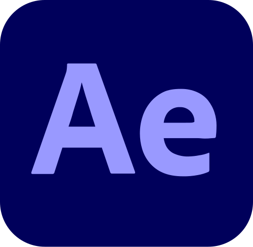
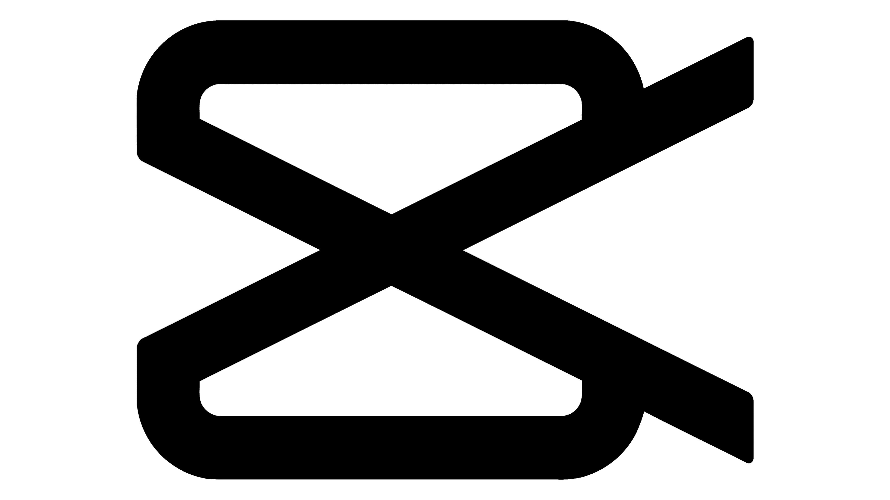
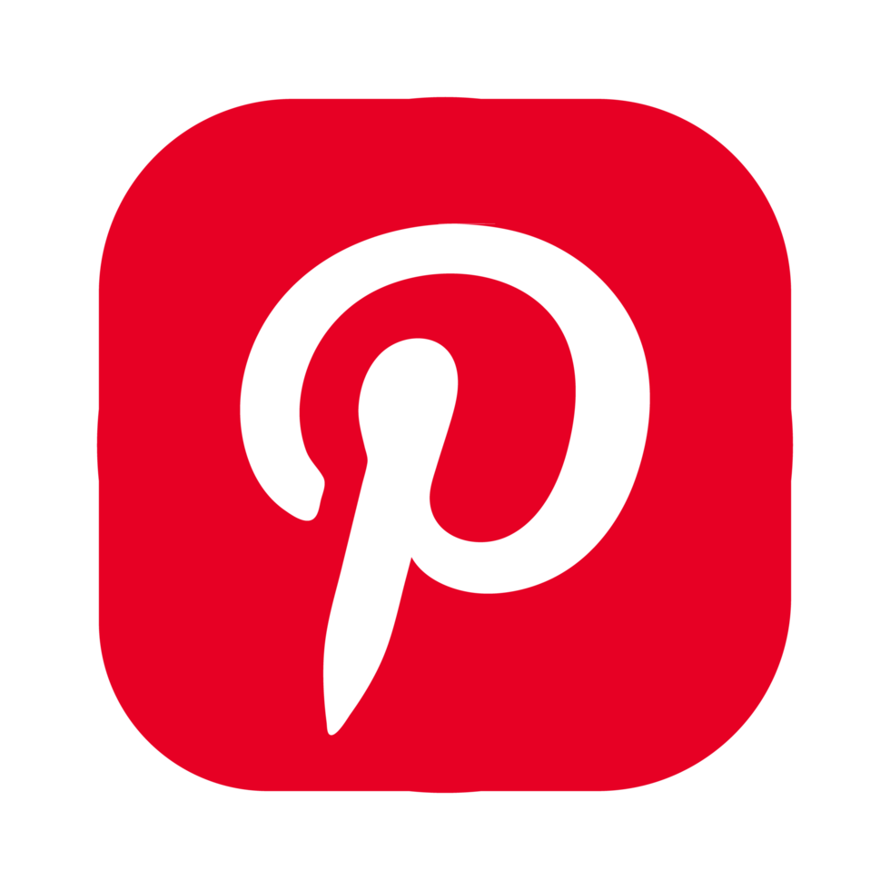
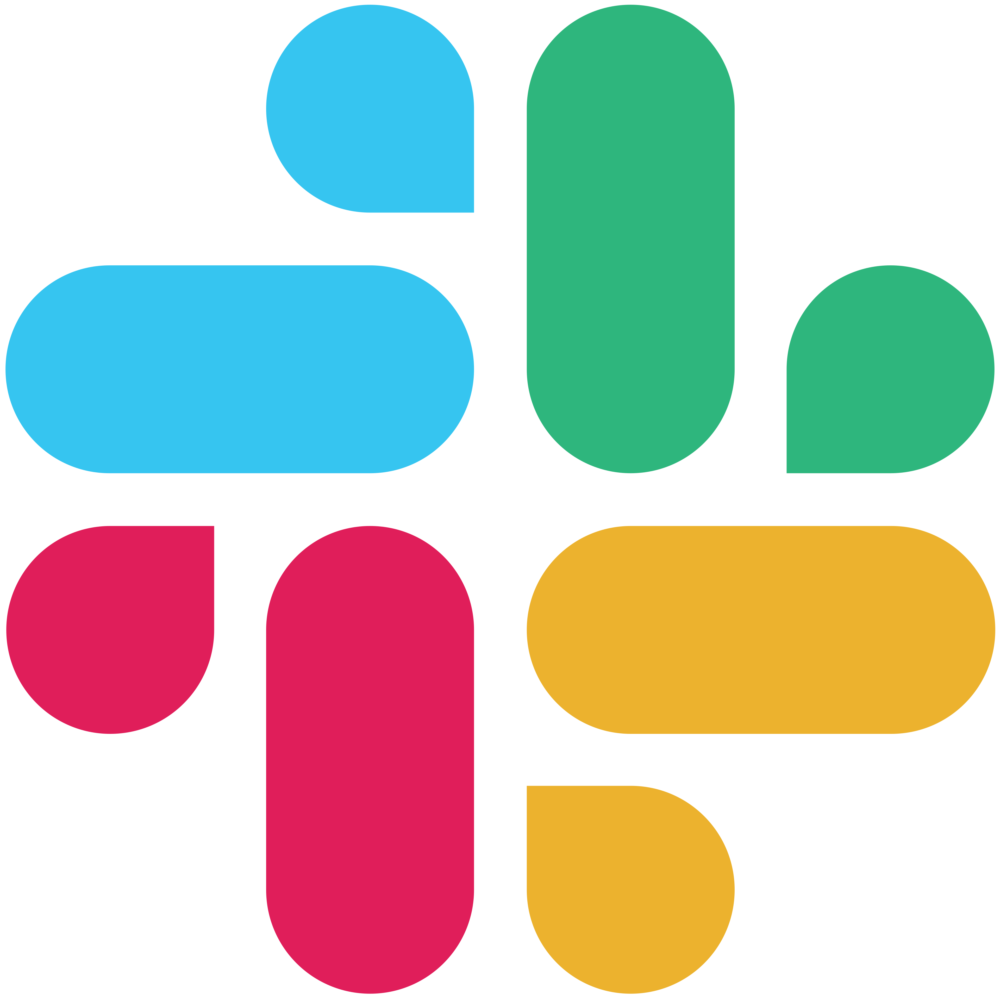
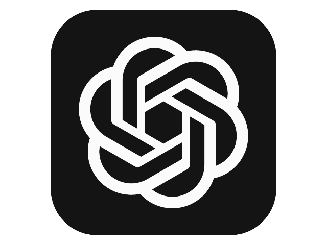
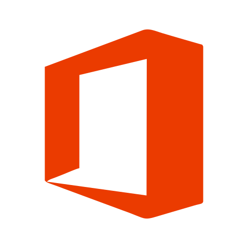
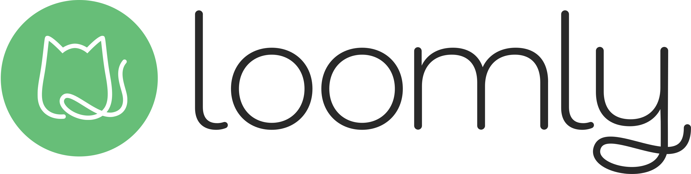

Værktøjer og programmer jeg kan benytte og arbejde i












Det siger andre om mig
 Simon Bak Andersen
Simon Bak Andersen
Head of marketing, liiteGuard
"I sin praktik hos liiteGuard har Maria haft mange bolde i luften og greb dem alle med
overskud. Hun har lavet alt fra at lave et fysisk løbemagasin fra bunden til færdigt eksemplar,
producere og optimere Meta-ads, skyde og efterbehandle produktbilleder, planlægge indhold
til SoMe, koordinere UGC-indhold, kommunikeret med ambassadører og influencere og alt
derimellem. ...
Jeg kan på det varmeste anbefale Maria. Hun er efter min bedste overbevisning en stor
gevinst for enhver arbejdsplads, der ønsker en social, velovervejet og flittig kollega. ..."
Læs hele referencen her
Viktoria Kuibida
Tidligere medstuderende/projektmakker, MMD
"Maria er den man ikke kan undvære i sin gruppe. Efter at have udført stort set alle gruppeprojekter med Maria, er der kun ros at sige om samarbejdet med hende. Maria er specielt god til at se det fulde billede, og finde den helt rigtig vej til resultatet. Hun er en god sparringspartner, der er samarbejdsvilling og viser altid et stort engagement som gør, at man er sikret de gode resultater.
Ud over det er hun god til at holde overblik hvilken gør, at deadlines altid bliver overholdt, og man er sikker på at man kan regne med hende. Hendes kreative og positive mindset gør, at der altid bliver lyttet og at man kommer frem til det helt rigtige beslutning - sammen"